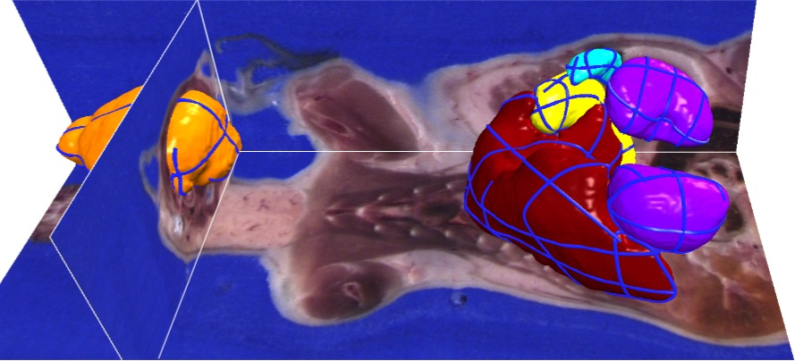

projects
Bilateral Hermite Radial Basis Functions for Contour-based Volume Segmentation
Takashi Ijiri, Shin Yoshizawa, Yu Sato, Masaaki Ito, Hideo Yokota
Abstract
In this paper, we propose a novel contour-based volume image segmentation technique. Our technique is based on an implicit surface reconstruction strategy, whereby a signed scalar field is generated from user-specified contours. The key idea is to compute the scalar field in a joint spatial-range domain (i.e., bilateral domain) and resample its values on an image manifold. We introduce a new formulation of Hermite radial basis function (HRBF) interpolation to obtain the scalar field in the bilateral domain. Incontrast to previous implicit methods, bilateral HRBF (B-HRBF) generates a segmentation boundary that passes through all contours, fits high-contrast image edges if they exist, and has a smooth shape in blurred areas of images. We also propose an acceler ation scheme for computing B-HRBF to support a real-time and intuitive segmentation interface. In our experiments, we achieved high-quality segmentation results for regions of interest with high-contrast edges and blurred boundaries.

Materials
Paper(Definitive version)
paper(preprint)
talk slide (ppt)
talk slide (pdf)
software (Japanese only)
Takashi Ijiri, Shin Yoshizawa, Yu Sato, Masaaki Ito, and Hideo Yokota.: Bilateral Hermite Radial Basis Functions for Contour-based Volume Segmentation. Computer Graphics Forum, Vol. 32, Issue 2, pp. 123-132, 2013. EUROGRAPHICS 2013.
@Article{Ijiri_EG13,
author = {Takashi Ijiri and Shin Yoshizawa and Yu Sato and Masaaki Ito and Hideo Yokota},
title = {{Bilateral Hermite Radial Basis Functions for Contour-based Volume Segmentation}},
journal = {Computer Graphics Forum},
year = {2013},
volume = {32},
number = {2},
pages = {123-132},
note = {Proc. of EUROGRAPHICS'13}
}
Implementation tips
For our Bilateral Hermit Radial Basis Function,
 = \Sigma^{N}_{i=1}} \left{ \alpha_i \phi({\bf x} - {\bf p}_i) - {\bf \beta}_i \nabla\phi({\bf x} - {\bf p}_i) \right} %2b {\bf ax} %2b b) ...(3),
...(3),
we used the following two kernels in our experiments:
 = ||{\bf x}||^3) ,
,
 = ||{\bf x}||^4 log||{\bf x}||) .
.
The both φ1 and φ2 provide convincing results.
The gradient of these kernels are computed as follows;
 = 3||{\bf x}||{\bf x})
 = ||{\bf x}||^2(4log||{\bf x}|| %2b 1) {\bf x})
The Hessian matrices of these kernels are computed as follows;
 = {\bf 0})

 = \frac{3{\bf x}{\bf x}^T}{||{\bf x}||} %2b 3||{\bf x}||{\bf I}_k)

 = {\bf 0})
 = (8log||{\bf x}||%2b6){\bf x}{\bf x}^T %2b ||{\bf x}||^2(4log||{\bf x}||%2b1){\bf I}_k)
where is a k-dimensional vector and
is a k-dimensional vector and
 is a k x k identity matrix.
is a k x k identity matrix.
We provide our implementation in our software (VoTracer).
we used the following two kernels in our experiments:
The both φ1 and φ2 provide convincing results.
The gradient of these kernels are computed as follows;
The Hessian matrices of these kernels are computed as follows;
where
We provide our implementation in our software (VoTracer).